MODの入れ方
1. Forgeをダウンロードする
Forgeの公式サイトを開き、 Minecraftの入れたいMODのバージョンに合ったものを選びます。
好きなバージョンををえらんで押すとこの画面になります。
・latestはそのバージョンの最新
・recommendedはおすすめのバージョン
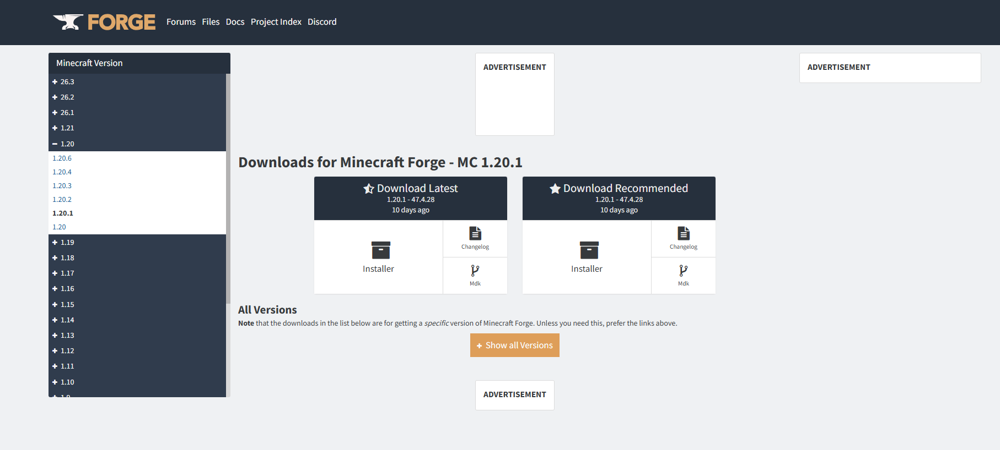
この画像になります。その後右下のcontinue to fileをおします
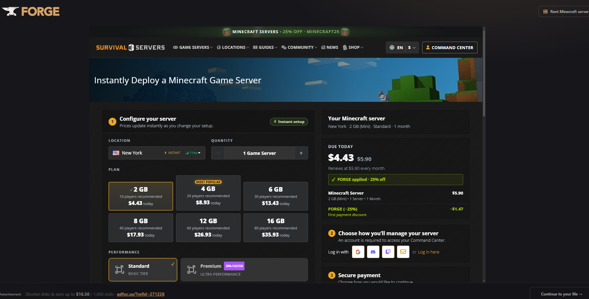
これが出たら好きなところに保存してください
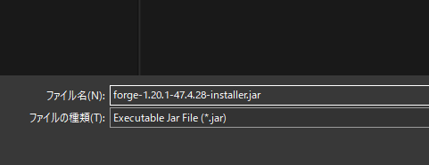
ダウンロード終わり
2. Forgeをインストールする
ダウンロードしたForgeのファイルを開きます。 ↓これ
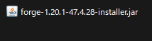
ダブルクリックするとこうなる
そのままOKをおすとダウンロードが始まります
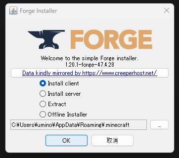
この画面が出たら終了
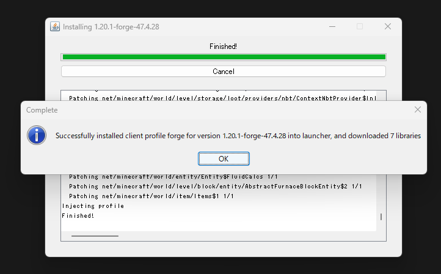
インストール終わり
3. MODをダウンロードする
CurseForgeから、Minecraftのバージョンに合ったMODをダウンロードします。
CurseForgeでMODを探すまず入れたいMODをしらべます。今回はJust Enough Items (JEI)をためします。
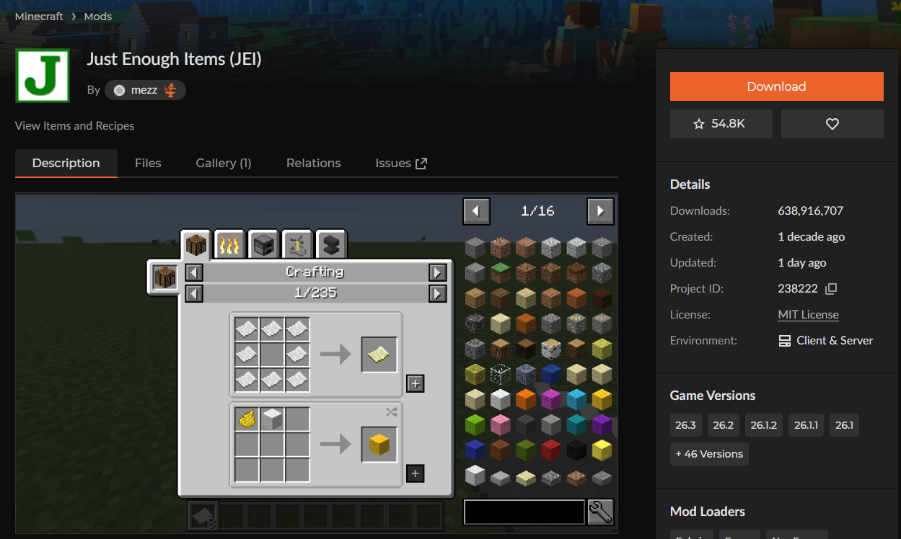
まずFilesをおします
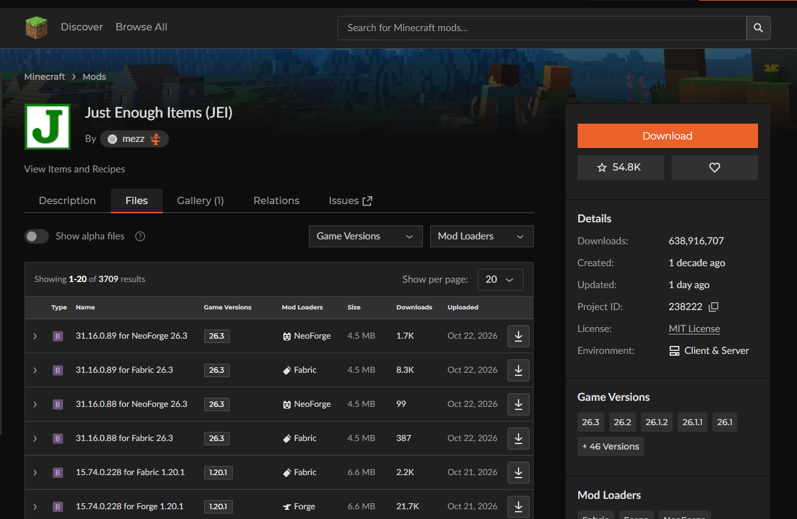
そのあとにMODのバージョンと使うも物を指定します。今回はバージョン1.20.1のforgeです。 次に↓みたいなボタンを押すとMODファイルのダウンロードができます
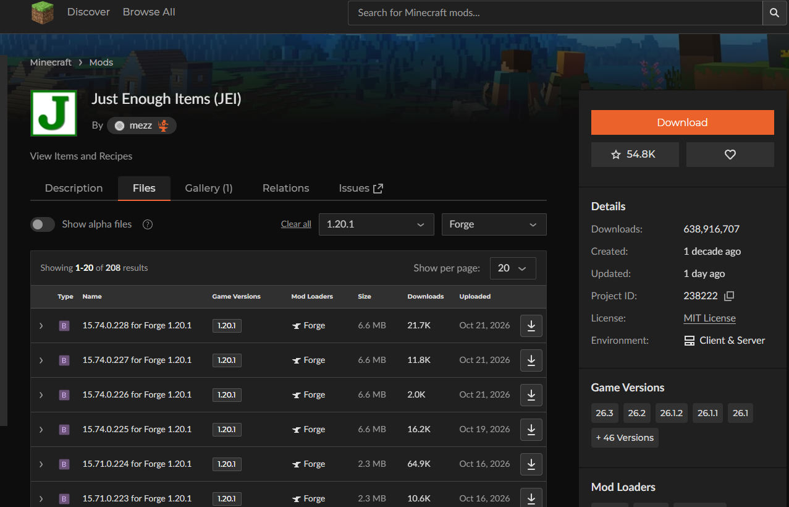
ファイルに入れたいMODがあれば成功です
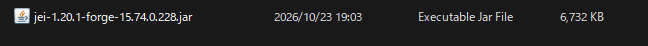
MODのダウンロード終わり
4. MODを入れる
Windowsキー + R を押して、 次の文字を入力します。
%appdata%\.minecraft\mods
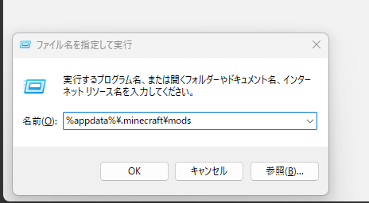
そうすることでマイクラのMODフォルダーを直接開けます
そこにダウンロードしたMODファイルを入れるとマイクラにMODを入れたことになります。
5. Minecraftを起動する
Minecraft Launcherを開き、 Forgeの起動構成があると思います。そのあとにForgeの欄の … を押します。
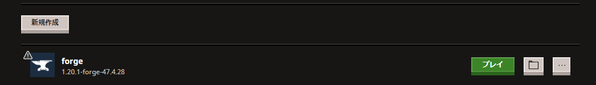
そこに編集・複製・削除があると思います。その中の編集を押します。これが出ます。
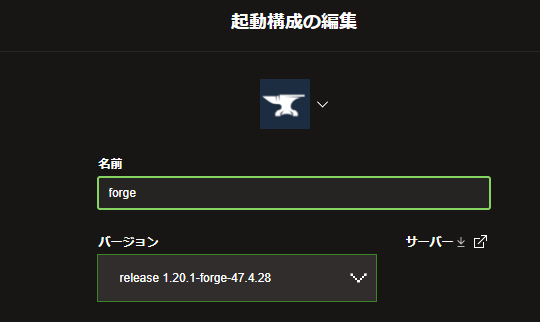
そのあとはMODのバージョンを探します。バージョンを指定出来たら保存を押しましょう。
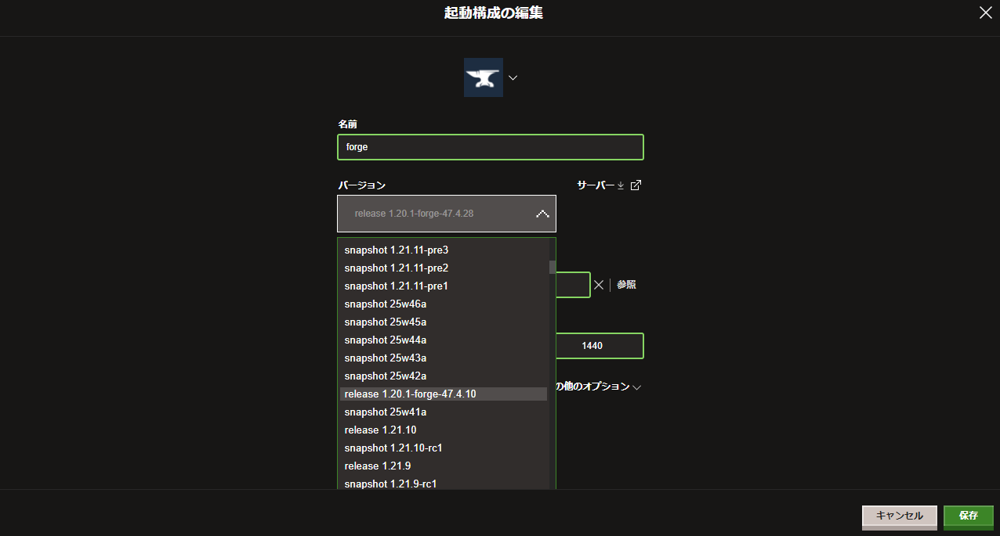
forgeのバージョンに適応されていたら起動構成からプレイを押してスタートしましょう。
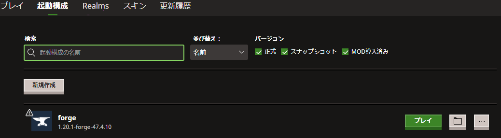
終わり